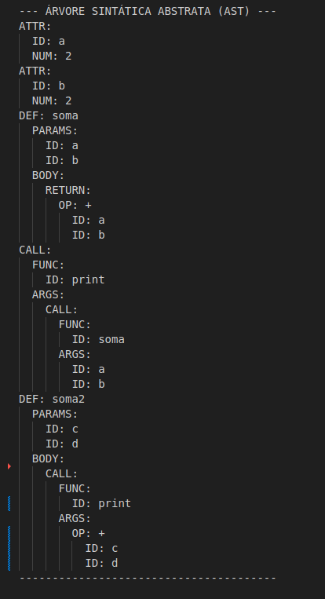

AST - Árvore de Sintaxe Abstrata
1. Introdução
A Árvore de Sintaxe Abstrata (AST - Abstract Syntax Tree) é a representação intermediária fundamental gerada pelo Analisador Sintático (Parser) após a validação da gramática do código-fonte.
Diferentemente da árvore de análise sintática (parse tree), a AST é uma representação abstrata e simplificada da estrutura hierárquica do código. Ela elimina detalhes sintáticos desnecessários (como parênteses, vírgulas e a chave de indentação do Python) e retém apenas os elementos essenciais para a análise semântica e a geração de código.
A AST serve como a entrada principal para as fases posteriores do compilador, incluindo a Análise Semântica e a Geração do Código Intermediário (TAC).
2. Metodologia
A construção da AST é realizada pelas Ações Semânticas integradas ao parser (Bison). Para cada regra gramatical reconhecida, funções específicas em ast.c são chamadas para alocar e conectar nós, construindo a estrutura hierárquica em memória.
2.1. Estrutura de Dados (ast.h)
O nó principal da AST é a struct NoAST, que é uma união de dados que permite representar diversas construções da linguagem em uma estrutura uniforme:
TipoNo tipo(Enumeração): Identifica o tipo de construção sintática que o nó representa (ex:NO_NUM,NO_ATRIBUICAO,NO_FUNCAO,NO_WHILE).- Dados: Campos como
valor_int,valor_double,valor_stringeoperadorarmazenam os valores literais e símbolos dos nós folha. - Conexões:
- Filhos (
filho1,filho2,filho3): Usados para representar a estrutura hierárquica (ex:filho1é a condição,filho2é o bloco THEN em umNO_IF). - Próximo (
proximo): Usado para encadear nós que pertencem à mesma lista (ex: comandos em um bloco, argumentos em uma chamada de função).
- Filhos (
2.2. Criação de Nós
A metodologia emprega funções dedicadas para a criação de cada tipo de nó, garantindo a inicialização segura e a correta alocação de memória:
| Função Exemplo | Tipo de Nó | Finalidade |
|---|---|---|
criarNoNum(int valor) |
NO_NUM |
Cria nós para literais inteiros. |
criarNoId(char *nome) |
NO_ID |
Cria nós para identificadores de variáveis e funções, alocando a string do nome. |
criarNoOp(char op, NoAST *esq, NoAST *dir) |
NO_OP_BINARIA |
Conecta os operandos (esq e dir) sob o nó do operador. |
criarNoListaComandos(...) |
NO_LISTA_COMANDOS |
Constrói blocos de código (encadeamento de comandos com proximo). |
criarNoChamadaFuncao(...) |
NO_CHAMADA_FUNCAO |
Conecta o nome da função (filho1) à lista de argumentos (filho2). |
3. Papel da AST no Compilador
A AST é o ponto central que conecta a fase de análise com as fases de processamento do código.
3.1. Análise Semântica Integrada
Enquanto a AST é construída, o parser executa ações semânticas críticas, utilizando a Tabela de Símbolos (st.h):
- Registro e Escopo: Variáveis e funções são registradas na tabela, e o controle de escopo (ex: em definições de função) é gerenciado.
- Inferência de Tipos: A função
Tipo inferirTipo(NoAST *no)percorre o nó para determinar o tipo de dado resultante (necessário para a correta emissão de opcodes no TAC, comoTAC_SOMAvsTAC_SOMA_F). - Avaliação Constante: A função
int avaliarExpressao(NoAST *expr)avalia expressões compostas apenas por literais e constantes conhecidas em tempo de compilação, otimizando o código antes da geração do TAC.
3.2. Facilitação da Geração de Código
O formato estruturado da AST simplifica o processo de Geração de Código de Três Endereços (TAC), permitindo que a função processar_no do TAC se concentre apenas na tradução sequencial, sem se preocupar com a análise sintática.
- A estrutura hierárquica (pais e filhos) da AST dita a ordem correta de avaliação das expressões, garantindo que as operações sejam traduzidas na sequência lógica.
4. Implementação
4.1. Código
O arquivo ast.c contém as funções que gerenciam a alocação, a construção, a impressão e a liberação da AST.
Gerenciamento e Debug
imprimirAST(const NoAST *raiz, int indent): Função recursiva essencial para o debug, que percorre a árvore e imprime a estrutura hierárquica no console usando indentação para visualizar o aninhamento.liberarAST(NoAST *raiz): Função recursiva que garante a desalocação completa de todos os nós da árvore, incluindo as strings alocadas (ex: nomes deNO_IDeNO_STRING), prevenindo vazamentos de memória.
Funções de Semântica Integrada
registrarParametros(NoAST *parametros): Percorre a lista de parâmetros de uma função e os insere imediatamente na Tabela de Símbolos para o escopo atual, marcando-os como inicializados.executarAtribuicao(NoAST *no): Implementa a lógica de tempo de execução para atribuições, incluindo a manipulação de vetores indexados, e atualiza a Tabela de Símbolos com os valores e tipos.
5. Execução
5.1. Código Fonte
O código de teste utilizado (ok_03_chamadaFuncao.py) define duas variáveis e duas funções de soma, chamando a primeira função com variáveis e a segunda com constantes:
a = 2
b = 2
def soma(a, b):
return a + b
print(soma(a, b))
def soma2(c, d):
return c + d
print(soma(1, 2))
Resultado da AST gerada pelo código de teste mencionado:

Histórico de Versões
| Versão | Descrição | Autor | Data | Revisor |
|---|---|---|---|---|
| 1.0 | Criação do Documento | Rafael Schadt | 26/11/2025 | Ludmila Nunes |